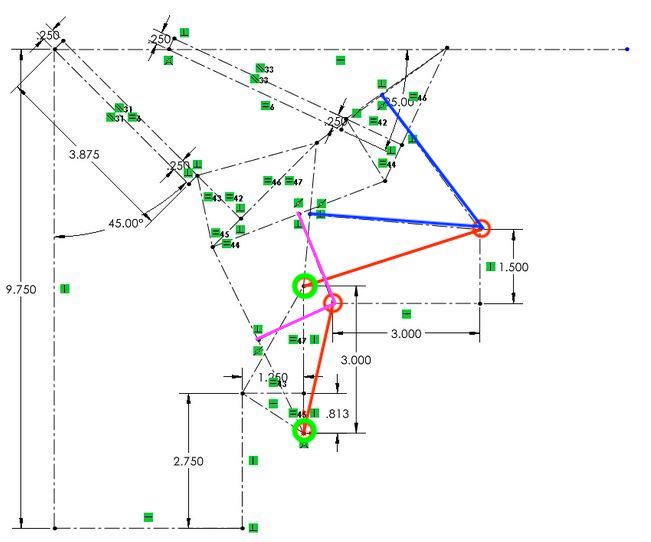

Unified Robotics I: Actuation
Description
The final project task is to simulate robots tasked with replacement of solar collector panels on
planet with two suns. There will be two types of solar collectors mounted at two different
angles (see image below). On each side of the solar farm roof there will be an old solar panel.
Teams will be required to have at least two different robots with different fourbar designs, one
with a regular servo-actuated gripper, and one with a continuous rotation servo-actuated
gripper.
The first robot will need to autonomously remove an old panel and place it on the staging
block. The old panel will be replaced with a new panel, which the robot will pick up and place it
on the empty spot on the roof. The first robot will then need to move to the other side of the
field and start line following as if to pick up the old panel from the other side of the roof. The
team will pause the first robot with the IR remote and replace it with the second robot in the
same position. The second robot will proceed to remove the old panel and replace it with a new
panel.

Arena in simulated environment
Execution
My team and I were given a differential drive robot (Pololu Romi) and had to develop two four-bar linkages and grippers. First, let's discuss the four bar synthasis for a gripper.
Four-bar Synthesis

My team and I started with this example gripper. We began our four-bar Synthesis by selecting three main points of contact, critical to successfully grasping an a "solar panel" or plate. The two points on the right hand side are the attachment points of the gripper to the four bar. In addition, we considered the fixed point of the gripper where a "solar panel" would make contact with to be a universal point in our four-bar analysis. That is, we chose points that regardless of the orientation would hold true. Hence why did not consider the dynamic bottom jaw of the gripper (it's position was not absolute).
Here we see three positions we want our gripper or coupler to be in. Therefore, our four bar linkage must ensure that our gripper achieves these positions. We used Three position synthesis to synthesize our fourbar.
